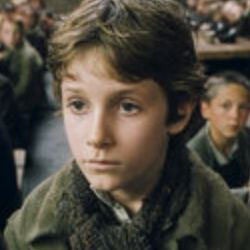
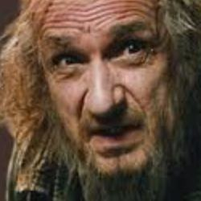

Summary
Oliver Twist is a novel by Charles Dickens, published in serial form in 1837–1839. It tells the story of an orphan boy named Oliver Twist who endures a miserable existence in a workhouse and then becomes involved with a gang of pickpockets led by the elderly criminal Fagin.
Oliver Twist is notable for its unromantic portrayal of criminals and their sordid lives, as well as for exposing the cruel treatment of the many orphans in London in the mid-19th century.
For more information, visit Wikipedia.
Characters
| Picture | Name | Description |
|---|---|---|
|  | Oliver Twist | An orphan boy who experiences various trials and tribulations throughout the novel. |
|  | Fagin | An elderly criminal who runs a gang of pickpockets and shelters homeless boys. |